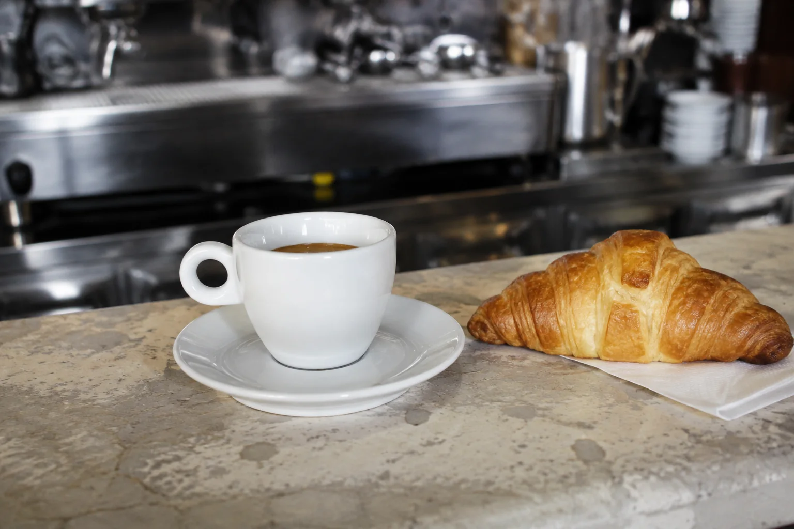

Переезжаете или живёте в Италии
Изучаете язык для переезда или уже переехали. Нужна практика и общение на итальянском. Хотите быстро влиться в среду. Планируете работу или учебу в Италии.
От лингвиста-переводчика с сертификатом CILS C1 и 15 годами практики
Первая встреча — чтобы понять,
комфортно ли нам заниматься вместе.
20 вопросов на лексику
и грамматику.
От простых фраз до тонкостей языка. Если сомневаетесь, выбирайте «Не знаю».
Результат и разбор — сразу. Тест даст примерный ориентир, а точнее ваш уровень обсудим на знакомстве.
Для теста нужен JavaScript. Вы также можете записаться на знакомство и обсудить свой уровень.
Изучаете язык для переезда или уже переехали. Нужна практика и общение на итальянском. Хотите быстро влиться в среду. Планируете работу или учебу в Италии.
A2 на ПМЖ или B1 на гражданство. Начинаете готовиться или только планируете. Хотите чувствовать уверенность и не переживать за результат.
Вам нравятся итальянское кино, музыка и книги. Хотите смотреть и слушать их в оригинале. Мечтаете о поездке в Италию и разговоре с итальянцами.
Слова и грамматика у вас уже есть. Не хватает практики. Хотите уверенно общаться в реальной жизни. У вас есть страх перепутать слово или использовать не тот глагол. Чувствуете себя некомфортно в диалоге или стесняетесь заговорить.
Учили итальянский 5 лет назад, но не дошли до результата. Почти всё забылось. Начинать заново страшно. Боитесь, что в этот раз тоже ничего не получится. Думаете, что вы не в том возрасте или недостаточно умные.
Мой подход
Сравниваем фразы и смотрим, как меняется их смысл. Затем составляем свои примеры, чтобы проверить, что правило понятно.
Идём от простого к сложному. Если объяснение не помогло, возвращаемся к теме с другими примерами и пробуем ещё раз.
Смотрим, где возникла ошибка и почему. Исправляем фразу и повторяем её, чтобы сразу попробовать верный вариант.
В домашних заданиях возвращаемся к пройденному. На следующей встрече обсуждаем то, что вызвало вопросы.
Открываем учебник на общей доске: прямо на странице можно писать и делать пометки. Слушаем аудио и смотрим учебные видео. Мы на одной доске, поэтому я помогаю с заданиями прямо по ходу разговора.

Я — бариста, вы — гость кафе. Пробуем заказать кофе и ответить на уточняющий вопрос.
Теперь ваша очередь
Выберите фразу — здесь можно сразу проверить себя.
На занятии ответ разбираю с вами лично.
После урока материалы и задания остаются у вас. Можно вернуться к сложному месту и спокойно повторить.
Основной формат
Всё время урока — для вас. Подбираю темы, задания и темп под ваш уровень и цель. Занимаемся онлайн, расписание согласуем вместе.
Своей компанией
Хотите учиться с другом, партнёром или близкими? Можно прийти своей парой или небольшой группой. Программу и условия обсудим лично.
История, традиции и культура Италии вплетены в занятия. Беру видео и тексты о жизни итальянцев. Вы слышите, как говорят носители. Так язык становится частью жизни, ради которой вы его учите.
До преподавания работал на радио, занимался письменным и устным переводом.
Окончил МГЛУ, учился в Москве и Италии.
Преподавал в языковых школах, а сейчас работаю самостоятельно. Вы общаетесь и занимаетесь со мной напрямую: я веду уроки, подбираю задания и отвечаю на ваши вопросы.
Лингвист-переводчик
Итальянский язык
60 минут, онлайн, бесплатно,
без обязательств.
Календарь откроется в отдельной вкладке. Если не удаётся записаться, напишите мне в Telegram.
Стоимость дальнейших занятий согласуем индивидуально до первого платного урока.
Да. Начну с произношения, первых слов и коротких фраз. Заранее учить алфавит или проходить курс самостоятельно не нужно.
С того, что осталось в памяти. На знакомстве посмотрю, что вы понимаете и можете сказать. Не придётся автоматически начинать с первой страницы: сначала восстановим нужное и разберём пробелы.
Онлайн вы тоже разговариваете со мной, слышите обратную связь и выполняете задания. Я вижу вашу работу на общей доске. Для встречи нужны стабильный интернет, микрофон и устройство с удобным экраном.
Не поздно. Важнее, для чего вам язык и сколько времени вы можете ему уделять. Подберу посильные задания и темп — без сравнения с другими учениками.
Если раньше не получалось, это ещё не повод ставить на себе крест. Посмотрим, что мешало: непонятные объяснения, мало практики или слишком быстрый темп. Начну с небольших задач, чтобы было видно, что уже получается.
Я подбираю учебник и материалы для занятий. Не покупайте ничего заранее: сначала определим уровень, а затем я объясню, что понадобится и как с этим работать.
Напишите мне, как только узнаете, что не сможете прийти. Условия переноса и отмены согласуем до начала обучения.
Напишите, какой экзамен планируете сдавать и когда. Сначала обсудим ваш уровень и задачу — после этого смогу сказать, возьмусь ли за подготовку.
Стоимость обсуждаю лично: она зависит от формата. Вы узнаете её до первого платного урока.
Это ознакомительная встреча на 60 минут, а не обычный учебный урок. Поговорим о вашей цели и опыте, я покажу материалы и отвечу на вопросы. После этого вы решите, хотите ли продолжать.
Запишитесь на бесплатную встречу —
обсудим вашу цель и план занятий.